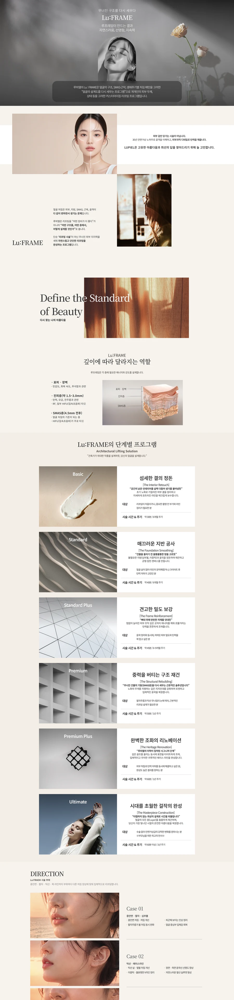
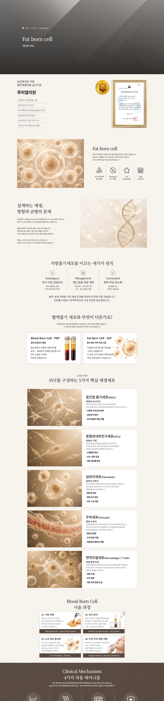
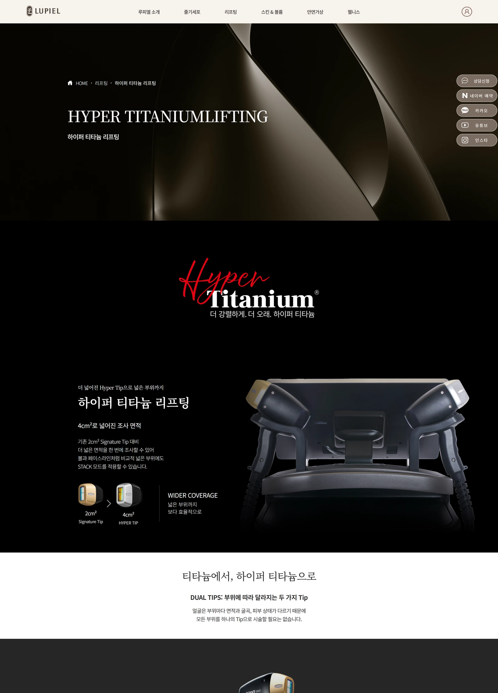
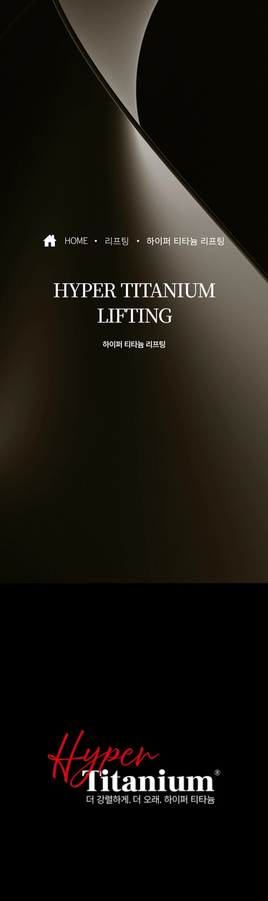

2026.03
LUPIEL CLINIC
피부과 · 성형외과 루피엘의원 시술 서브페이지 디자인

- CLIENT
- 루피엘의원 (피부과 · 성형외과)
- PERIOD
- 2026.03 (약 2개월)
- ROLE
- 기획 20% · 디자인 100% 하이퍼 티타늄 리프팅 페이지는 퍼블리싱까지
- TEAM
- 마케팅 기획 1 · 퍼블리싱 외주 1 · 디자인 1
- SCOPE
- 시술 서브페이지 11종 · PC / 모바일
- WEBSITE
- lupiel.co.kr ↗
SUMMARY
하나의 구성으로
열한 개의 페이지를
피부과 · 성형외과 루피엘의원의 시술 서브페이지 디자인 프로젝트입니다. 클라이언트는 사이트 전체가 통일되어 보이고, 깔끔하고 고급스러운 느낌을 원했습니다.
기존 메뉴 구조는 그대로 두고, 직접 만든 서브페이지 구성을 모든 시술 페이지에 반복해 적용해 열한 개의 페이지가 하나의 사이트처럼 보이도록 했습니다.
KEY POINTS
통일감을 만드는 방법
하나의 구성 반복
직접 만든 서브페이지 구성을 열한 개 시술 페이지에 똑같이 적용해, 어느 페이지를 열어도 같은 사이트로 느껴지게 했습니다.
깔끔하고 고급스럽게
클라이언트 요청에 맞춰 차분한 톤과 여백으로 피부과 · 성형외과의 신뢰감을 표현했습니다.
AI 이미지 지양
AI 이미지를 꺼리는 클라이언트의 의견을 반영해 이미지를 선별했습니다.
직접 퍼블리싱
하이퍼 티타늄 리프팅 페이지는 디자인에 이어 퍼블리싱까지 직접 진행했습니다.
SUBPAGES
같은 구성, 다른 시술
11종 가운데 4개 페이지입니다. 헤더와 상단 비주얼 형식, 차분한 톤과 정보 배치 방식을 공통으로 유지하면서, 시술마다 필요한 내용에 맞춰 섹션을 구성했습니다.




DESIGN + PUBLISHING
하이퍼 티타늄 리프팅
디자인부터 퍼블리싱까지 직접 진행한 페이지입니다. PC와 모바일에서 같은 흐름이 유지되도록 구현했습니다.


RESULT
결과
약 2개월 동안 시술 서브페이지 11종을 하나의 구성으로 디자인해, 새 페이지가 늘어나도 통일된 사이트로 보이도록 만들었습니다. 그중 하이퍼 티타늄 리프팅 페이지는 퍼블리싱까지 직접 완료했습니다.